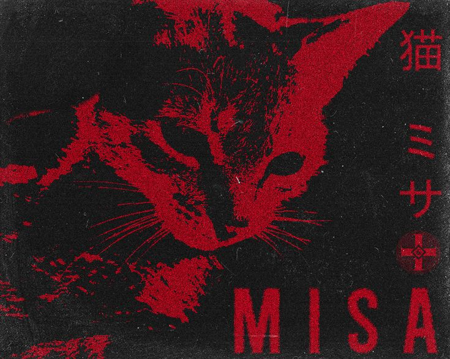

> initializing daeese.me
> loading modules......... ok
> discord gateway......... ok
> spotify................. live
> ready.

Fullstack developer
@daeese
releasesPick a sleeve to open the release.
Policies and community invites.